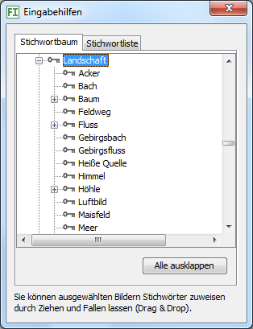

Eingabhilfen fügen Wörter hinzu in Eingabefelder des Kartenreiters Bearbeiten und der erweiterten Suche. Außerdem können Sie die Stichwörter auf ausgewählte Bilder ziehen und diesen so zuweisen.

Die Arbeit mit dem Stichwortbaum ist hier beschrieben.
Sie können ein Stichwort auswählen und auf eine beliebige Liste des Bearbeiten-Kartenreiters ziehen oder auf ein beliebiges Eingabefeld. Es werden das Stichwort und seine echten Elternstichwörter übernommen.
Alternativ können Sie ein Stichwort auf ausgewählte Bilder fallen lassen. In diesem Fall wird die Stichwortliste aller ausgewählten Bilder ergänzt mit dem fallen gelassenen Stichwort und seinen echten Elternstichwörtern.
Sie können eines oder mehrer Stichwörter auswählen und auf eine beliebige Liste des Bearbeiten-Kartenreiters ziehen oder auf ein beliebiges Eingabefeld.
Alternativ können Sie die Stichwörter auf ausgewählte Bilder fallen lassen. In diesem Fall wird die Stichwortliste aller ausgewählten Bilder ergänzt mit den fallen gelassenen Stichwörtern.
In diesem Fenster sind alle Vorlagen aufgelistet, die Sie im Kartenreiter Bearbeiten angelegt haben. Folgende Aktionen sind möglich: